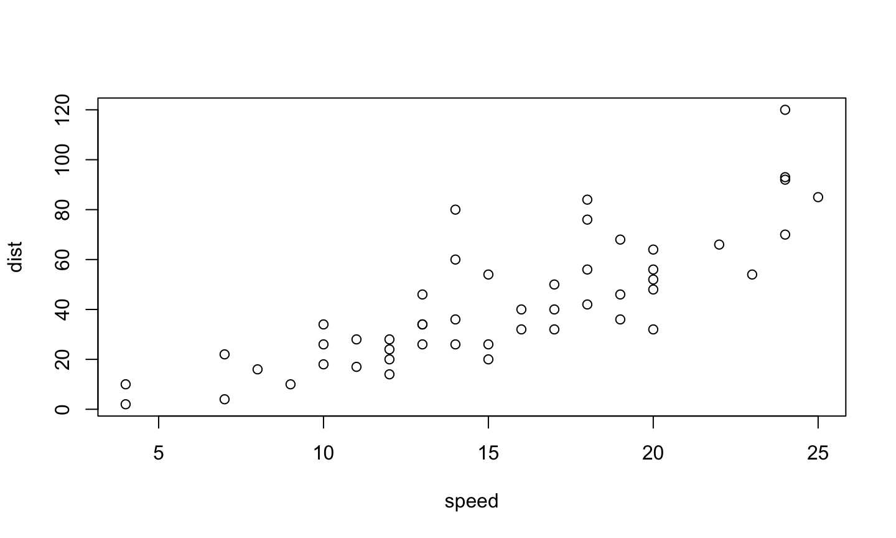
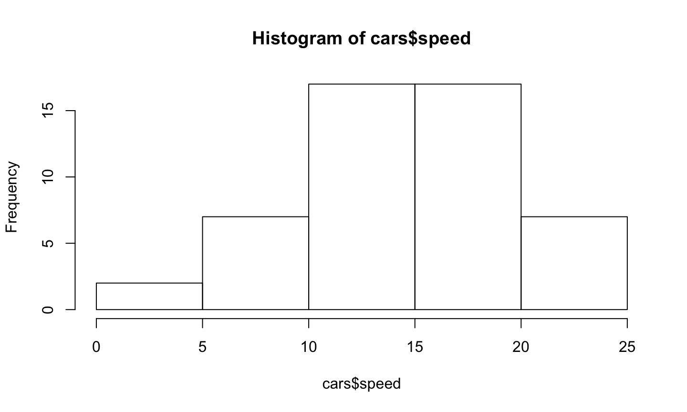

October 4, 2019
html_notebook to use the R-notebook capabilitiesUses markdown syntax to create formatted headers (see above), paragraphs, bulleted lists (this is one!), font emphasis, hyperlinks, block quotes, images, and more
Renders math-equations using LaTeX. Example:
## [1] "The equation $$Y_t = X_t + \varepsilon_t $$ renders to"
\[Y_t = X_t + \varepsilon_t \]
R-chunks are pieces of code that are included in the place where the output is wanted.
x<-c("Hello","World")
x
## [1] "Hello" "World"
## [1] "Hello" "World"
You can also write up code using inline syntax
If we want to calculate the average of cars$speed, we might write
mean(cars$speed)
## [1] 15.4
or write "The average is 15.4"
First things first, using R to create visuals.
We are going to use data already preinstalled in R called cars
cars:head(cars,10)
## speed dist ## 1 4 2 ## 2 4 10 ## 3 7 4 ## 4 7 22 ## 5 8 16 ## 6 9 10 ## 7 10 18 ## 8 10 26 ## 9 10 34 ## 10 11 17
carsplot(cars)

cars.#install.packages("psych")
library(psych)
describe(cars,skew = F,trim = 0,IQR = T)
## vars n mean sd min max range se IQR ## speed 1 50 15.40 5.29 4 25 21 0.75 7 ## dist 2 50 42.98 25.77 2 120 118 3.64 30
cars.hist(cars$speed)

Suppose we want to create an interactive tutorial where students can practice their R analysis skills!
#install.packages("learnr")
library(learnr)
# Calculate the average speed of cars. Save as an object called `mean`
mean<-mean(cars$speed)
runtime: shiny in the YAML, you can create interactive appslearnr package which requires the runtime: shiny_prerendered optionplot_ly(cars, x = ~speed, y = ~dist)
plot_ly(x = cars$speed, type = "histogram")
plot_ly(x = cars$speed, type = "box")
plot<-plot_ly(x=cars$speed,y=cars$dist) (subplot( plot %>% add_markers(alpha = 0.2), plot %>% add_histogram2d() ))